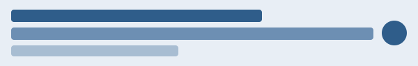

Observed geometry
Bounding boxes captured from a real browser, never inferred from source.
A deterministic page whose regions move, resize, disappear and change on purpose, so a change-review workflow has something honest to observe.
Bounding boxes captured from a real browser, never inferred from source.
Left-of, follows-vertically, fits-inside and the rest of the frozen vocabulary.
